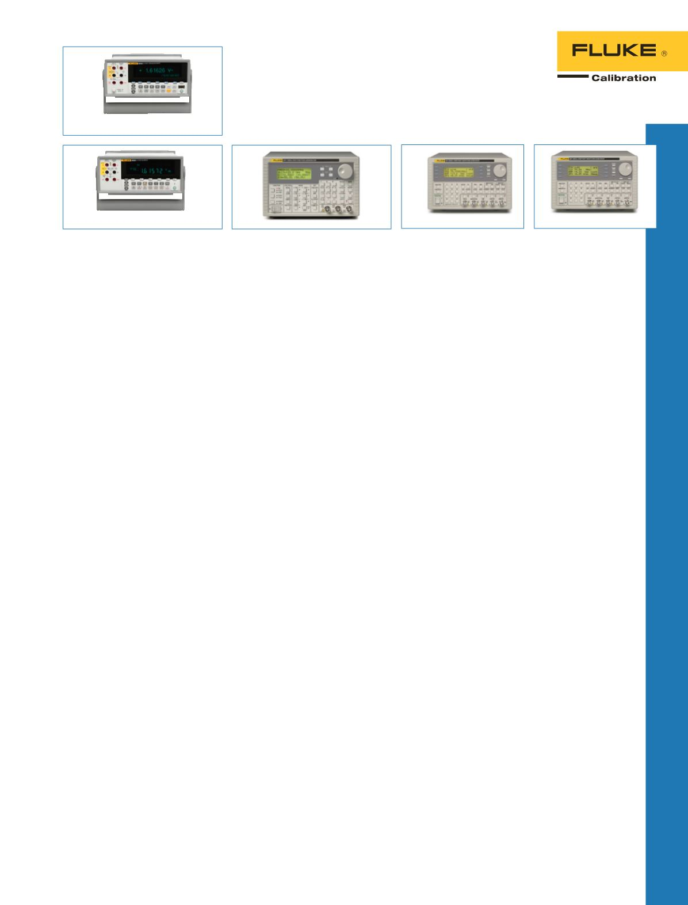

Registrieren Sie Ihr Produkt
von Fluke Calibration online
Besuchen Sie
/
register-product
, um Ihr Produkt
heute zu registrieren!
Autorisierte Fluke Kalibrier-
Servicezentren
Fluke Calibration bietet weltweit
Kalibrierungen, Reparaturen und
Kundenunterstützung an, die Sie
über unsere eigenen, führenden
Metrologielabore oder unsere Ser-
vice-Partner erhalten. Um die beste
Lösung für Ihr Kalibrierprodukt zu
finden, besuchen Sie uns bei
/
Service-und-Support
, kontaktieren
Sie uns telefonisch unter
0221-9477-250
oder senden
Sie uns eine E-Mail an
Schulung
Mit den Kalibrier- und Metrologie-
schulungen von Fluke Calibration
können Sie und Ihre Mitarbeiter
mehr Wissen in einer Reihe von
Disziplinen erlangen. Die Ausbilder
sind Experten auf den Gebieten
elektrische, Temperatur-, Druck-
und Strömungskalibrierung, die
Ihnen helfen möchten, die Grundla-
gen und Verfahren der Messtechnik
zu erlernen, damit Sie diese
unmittelbar an Ihrem Arbeitsplatz
einsetzen können. Fluke Calibration
bietet Kurse auf einführender, mitt-
lerer und fortgeschrittener Ebene
in unterschiedlichen Formaten an,
um Ihren Anforderungen gerecht zu
werden.
Geleitete Präsenzkurse
Unsere Kurse unter Leitung eines
Trainers decken eine Vielzahl
von Messtechnikthemen ab, und
haben eine Länge von einem bis
fünf Tagen. Sie werden an unter-
schiedlichen Orten auf der ganzen
Welt abgehalten. Schulungen
von Fluke Calibration sind eine
großartige Möglichkeit zur Maxi-
mierung Ihrer Investition in Ihre
Kalibrierausrüstung.
Geleitete Onlineschulungen
Unsere Online-Schulungen unter
der Leitung eines Trainers bieten
denselben großartigen Zugang zu
Experten von Fluke Calibration mit
dem weiteren Vorteil, dass Sie nicht
reisen müssen. Online-Schulungen
unter der Leitung eines Trainers
sind so konzipiert, dass sie in Ihren
Zeitplan passen, ohne Ihre Arbeits-
abläufe zu unterbrechen. Die Kurse
bestehen aus ein bis fünf Teilen von
jeweils zwei Stunden Dauer, die an
aufeinanderfolgenden Tagen abge-
halten werden.
Selbstregulierte
Onlineschulungen
Unsere interaktiven Schulungskurse
für Kalibrierung und Messtechnik
wurden von Fluke Calibration und
anderen technischen Experten in
der Messtechnik-Community unter
Verwendung bewährter Lehrma-
terialkomponenten entwickelt. Zu
Beginn eines jeden Moduls wird in
einem Tutorial beschrieben, wie
der Kurs aufgebaut ist. Die Lernziele
sind klar formuliert. Die Themen
werden aus leicht nagivierbaren
Menüs und Submenüs ausgewählt.
Eingebettete Fragen werden oft prä-
sentiert, damit das Gelernte besser
behalten wird. Einladende Grafi-
ken, Fotos, Formulare und Tabellen
unterstützen das Textmaterial.
Ein abschließender Test nach der
Schulung bietet einen Kompetenz-
nachweis. Die Tests werden nach
jeder Verwendung neu gemischt.
Am Wichtigsten ist die Tatsache,
dass es ein Abschlusszertifikat gibt,
das die Dokumentationsvorrausset-
zungen erfüllt.
Tools für selbstreguliertes
Lernen
Zusätzlich zu den interaktiven Schu-
lungskursen bietet Fluke Calibration
mehrere zusätzliche interaktive Schu-
lungs-Tools für Messtechniksoftware
und Gleichstrom-Niederfrequenz-
messtechnik an. Unsere interaktiven
Messtechniksoftware-CD-Roms
geben Ihnen die Möglichkeit, in Ihrer
eigenen Geschwindigkeit zu lernen.
Die bekannte Web-Schnittstelle
vereinfacht das Navigieren dieses
Programms, und nach erfolg-
reichem Abschluss des Kurses
erhalten Sie ein Abschlusszertifikat.
Fluke Calibration bietet auch das
einzige umfassende Buch über
Metrologie im Gleichstrom- und
Niederfrequenzbereich an,
Calibra-
tion: Philosophy in Practice, Second
Edition (Kalibrierung: Philosophie
in der Praxis, zweite Auflage)
. Es
deckt in der Praxis vorkommende
Konzepte und Anwendungen ab,
und ist für den arbeitenden Techni-
ker konzipiert und verfasst.
Schulungen vor Ort
Kurse von Fluke Calibration unter
Leitung eines Trainers können
auch in Ihren Räumen stattfinden.
Wenn Sie viele Kursteilnehmer
haben, oder wenn das zu behan-
delnde Material von Ihnen als
vertraulich angesehen wird, ist
On-Site Training möglicherweise
eine attraktive Möglichkeit für Sie.
Wenden Sie sich an Ihren örtli-
chen Vertriebspartner von Fluke
Calibration, um spezifische Anfor-
derungen und Vereinbarungen zu
besprechen, oder schicken
Sie uns eine E-Mail an
.
, damit
ein Vertriebspartner von Fluke
Calibration mit Ihnen Kontakt
aufnehmen kann.
Informationen über aktuelle
Kurspläne, Preise und Schulungs-
ressourcen finden Sie auf
unserer Website unter
Zusätzliche Installations- und
Schulungsservices
Die Beratungsservices von Fluke
Calibration unterstützen Sie dabei,
Ihre Kalibrierprodukte möglichst
produktiv und kosteneffizient zu
konfigurieren und zu verwenden.
Wir bieten Unterstützung in fol-
genden Bereichen:
•
Minimierung von
Betriebsausfallzeiten
•
Sicherstellen des effizienten
Betriebs Ihrer Geräte
•
Bestätigung des ordnungsgemä-
ßen Betriebs Ihrer Systeme
•
Schulungen vor Ort, außer Haus,
bei Fluke Calibration oder online
49
Service und Schulung